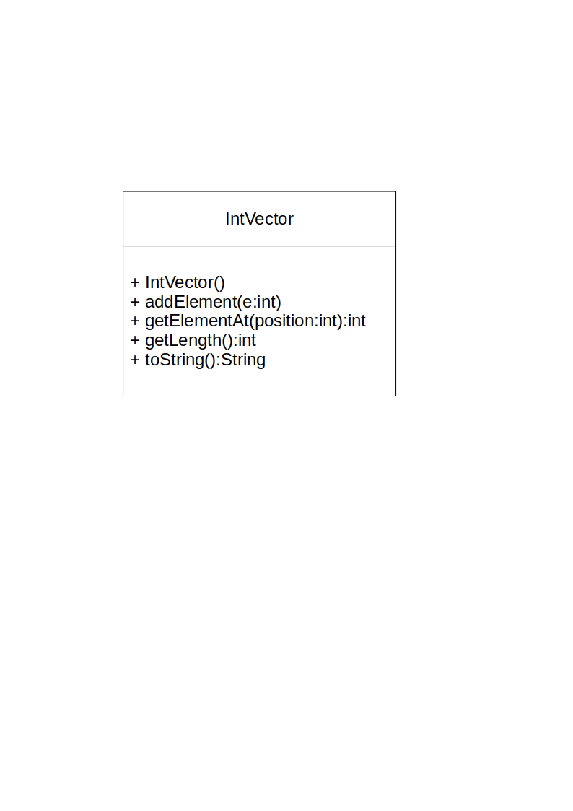
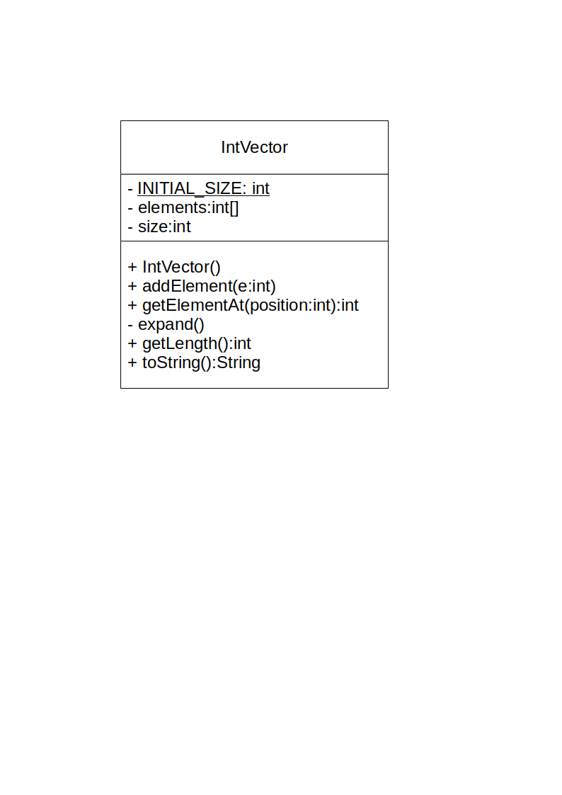

Generici
Progettazione e Sviluppo del Software
C.D.L. Tecnologie dei Sistemi Informatici
Danilo Pianini — danilo.pianini@unibo.it
Gianluca Aguzzi — gianluca.aguzzi@unibo.it
Angelo Filaseta — angelo.filaseta@unibo.it
Compiled on: 2025-10-30 — versione stampabile
Outline
Goal della lezione
- Illustrare il problema delle collezioni polimorfiche
- Discutere il concetto di polimorfismo parametrico
- Illustrare i Generici di Java e alcuni loro vari dettagli
Argomenti
- Collezioni con polimorfismo inclusivo
- Classi generiche
- Interfacce generiche
- Metodi generici
Collezioni con polimorfismo inclusivo
Forme di riuso nella programmazione OO
Composizione (e come caso particolare, delegazione)
Un oggetto è ottenuto per composizione di oggetti di altre classi
Estensione (ereditarietà)
Una nuova classe è ottenuta riusando il codice di una classe pre-esistente
Polimorfismo inclusivo (subtyping)
Una funzionalità realizzata per lavorare su valori/oggetti del tipo A,
può lavorare con qualunque valore/oggetto del sottotipo B
(p.e., se B estende la classe A, o se B implementa l’interfaccia A)
Polimorfismo parametrico (Java/C# generics, C++ templates,..)
Una funzionalità (classe o metodo) generica è costruita in modo tale da lavorare uniformemente su valori/oggetti indipendentemente dal loro tipo: tale tipo diventa quindi una sorta di parametro addizionale
Astrazioni uniformi con le classi
Astrazioni uniformi per problemi ricorrenti
- Si consideri il problema specifico del controllo dell’accensione di varie tipologie di dispositivi
- Tale funzionalità si può fattorizzare ad esempio in una classe astratta
Device
- Tale funzionalità si può fattorizzare ad esempio in una classe astratta
- Durante lo sviluppo di vari sistemi si incontrano problemi generali/ricorrenti che possono trovare una soluzione comune
- Spesso tali soluzioni sono fattorizzabili in una o più interfacce/classi altamente riusabili (per astrazione)
- Fattorizzare = mettere a fattor comune, si pensi alla matematica $AB + AC = A(B + C)$
Un caso fondamentale: le collection
- Una collection è un oggetto il cui compito è quello di immagazzinare i riferimenti ad un numero (tipicamente non precisato) di altri oggetti
- Fra i suoi compiti c’è quello di consentire modifiche ed accessi veloci all’insieme di elementi di tale collezioni
- Varie strategie possono essere utilizzate, seguendo la teoria/pratica degli algoritmi e delle strutture dati
Un esempio: IntVector
Collection IntVector
- Contiene serie numeriche (vettori) di dimensione non nota a priori, ossia, a lunghezza variabile..

UseIntVector
public class UseIntVector {
public static void main(String[] s) {
final IntVector vi = new IntVector();
// Serie di Fibonacci: fib(0)=fib(1)=1, fib(N)=fib(N-1)+fib(N-2) if N>1
vi.addElement(1);
vi.addElement(1);
for (int i = 0; i < 20; i++) {
vi.addElement(
vi.getElementAt(vi.getLength() - 1) + // ultimo
vi.getElementAt(vi.getLength() - 2) // penultimo
);
}
System.out.println(vi);
// |1|1|2|3|5|8|13|21|34|55|89|144|233|..
// 377|610|987|1597|2584|4181|6765|10946|17711|
}
}
IntVector – implementazione
Collection IntVector
- Contiene serie numeriche (vettori) di dimensione non nota a priori
- Realizzata componendo un array che viene espanso all’occorrenza

IntVector pt 1
public class IntVector {
private static final int INITIAL_SIZE = 10;
private int[] elements; // Deposito per gli elementi
private int size; // Numero di elementi
public IntVector(){ // Inizialmente vuoto
this.elements = new int[INITIAL_SIZE];
this.size = 0;
}
public void addElement(final int e) {
if (this.size == elements.length) {
this.expand(); // Se non c'è più spazio..
}
this.elements[this.size] = e;
this.size++;
}
public int getElementAt(final int position) {
return this.elements[position];
}
IntVector pt 2
public int getLength() {
return this.size;
}
private void expand() { // Raddoppio lo spazio..
final int[] newElements = new int[this.elements.length*2];
for (int i=0; i < this.elements.length; i++){
newElements[i] = this.elements[i];
}
this.elements = newElements;
//this.elements = java.util.Arrays.copyOf(this.elements, this.elements.length*2);
}
public String toString() {
String s="|";
for (int i=0; i < size; i++){
s = s + this.elements[i] + "|";
}
return s;
}
}
Un primo passo verso l’uniformità
Solo elenchi di int?
- L’esperienza porterebbe subito alla necessità di progettare vettori di
float,double,boolean, … ossia di ogni tipo primitivo - E poi, anche vettori di
String,Date, eccetera - L’implementazione sarebbe analoga, ma senza possibilità di riuso..
Collection uniformi “monomorfiche”
- Una prima soluzione del problema la si ottiene sfruttando il polimorfismo inclusivo e la filosofia “everything is an object” (incluso l’uso dell’autoboxing dei tipi primitivi)
- Si realizza unicamente un
ObjectVector, semplicemente sostituendointconObject - Si inserisce qualunque elemento (via upcast implicito)
ObjectVectorè monomorfica in quanto “vede” un solo tipo,Object(sebbene i riferimenti agliObjectsiano polimorfici)
- Quando si riottiene un valore serve un downcast esplicito
Da IntVector a ObjectVector

UseObjectVector
- NOTA: necessità di downcast espliciti
public class UseObjectVector {
public static void main(String[] s) {
// Serie di Fibonacci
final ObjectVector vobj = new ObjectVector();
// fib(0)=fib(1)=1, fib(N)=fib(N-1)+fib(N-2) if N>1
vobj.addElement(1); // grazie all'autoboxing
vobj.addElement(1);
for (int i = 0; i < 20; i++) {
vobj.addElement( // servono downcast specifici
(Integer) vobj.getElementAt(vobj.getLength() - 1)
+ (Integer) vobj.getElementAt(vobj.getLength() - 2));
}
System.out.println(vobj);
// |1|1|2|3|5|8|13|21|34|55|89|144|233|..
// 377|610|987|1597|2584|4181|6765|10946|17711|
// Altro esempio
final ObjectVector vobj2 = new ObjectVector();
vobj2.addElement("Prova");
vobj2.addElement("di");
vobj2.addElement("vettore");
vobj2.addElement(new Object());
System.out.println(vobj2);
String str = (String) vobj2.getElementAt(1); // "di"
// String str2 = (String)vobj2.getElementAt(3); // Exception
}
}
La necessità di un approccio a polimorfismo parametrico
Prima di Java 5
- Questo era l’approccio standard alla costruzione di collection
- Java Collection Framework — una libreria fondamentale
Problema
- Con questo approccio, nel codice Java risultavano molti usi di oggetti simili a
ObjectVectoroObjectList - Si perdeva molto facilmente traccia di quale fosse il contenuto..
- contenevano oggetti vari? solo degli
Integer? solo delleString?
- contenevano oggetti vari? solo degli
- Il codice conteneva spesso dei downcast sbagliati, e quindi molte applicazioni Java fallivano generando dei
ClassCastException
Più in generale
Il problema si manifesta ogni volta che voglio collezionare oggetti il cui tipo non è noto a priori, ma potrebbe essere soggetto a polimorfismo inclusivo
Polimorfismo parametrico
Idea di base
- Dato un frammento di codice
Fche lavora su un certo tipo, diciamoString, se può lavorare in modo uniforme su altri tipi… - … allora lo si rende parametrico, sostituendo a
Stringuna sorta di variabile o parametroX(chiamata type variable o type parameter, ossia una variabile/parametro che denota un tipo)- A questo punto, quando serve il frammento di codice istanziato sulle stringhe, si usa
F<String>, ossia si richiede cheXdiventiString - Quando serve il frammento di codice istanziato sugli Integer, si usa
F<Integer> - Il codice che usa tale polimorfismo parametrico è uniforme (cioè non cambia) indipendentemente dalle istanziazioni dei tipi
- A questo punto, quando serve il frammento di codice istanziato sulle stringhe, si usa
Java Generics
- I generici sono un meccanismo compile-time basato su parametri di tipo per implementare polimorfismo parametrico
- Classi/interfacce/metodi generici: classi/interfacce/metodi parametrizzate su tipi, cioè che accettano tipi come parametri
- Nessun impatto a run-time, per via dell’implementazione a “erasure”
javac“compila via i generici”, quindi la JVM non li vede
Classi generiche
La classe generica Vector<X>
Vectorsi dice che è un tipo parametrico (in quanto accetta il “parametro di tipo”X)
public class Vector<X>{
// X è la type-variable, ossia il tipo degli elementi
public Vector() { /* ... */ }
public void addElement(X e) { /* ... */ } // Input di tipo X
public X getElementAt(int pos) { /* ... */ } // Output di tipo X
public int getLength() { /* ... */ }
public String toString() { /* ... */ }
}
Uso di una classe generica
- Si istanzia il parametro di tipo generico
Xin un tipo specifico (argomento di tipo), ad es.Integer
public class UseVector {
public static void main(String[] s) {
// Il tipo di vs è Vector<String>
// Ma la sua classe è Vector<X>
final Vector<String> vs = new Vector<String>();
vs.addElement("Prova");
vs.addElement("di");
vs.addElement("Vettore");
final String str = vs.getElementAt(0) + " " +
vs.getElementAt(1) + " " +
vs.getElementAt(2); // Nota, nessun cast!
System.out.println(str);
final Vector<Integer> vi=new Vector<Integer>();
vi.addElement(10); // Autoboxing
vi.addElement(20);
vi.addElement(30);
final int i = vi.getElementAt(0) + // Unboxing
vi.getElementAt(1) +
vi.getElementAt(2);
System.out.println(i);
}
}
Terminologia, e elementi essenziali
Data una classe generica C<X,Y>..
Cè detta tipo parametricoXeYsono dette le sue type-variable o parametri di tipoXeYpossono essere usati come un qualunque tipo dentro la classe (con alcune limitazioni che vedremo)
I clienti delle classi generiche
- Devono usare tipi specifici ottenuti dai tipi generici, ovvero versioni “istanziate” delle classi generiche
C<String,Integer>,C<C<Object,Object>,Object>- Non
Csenza parametri, altrimenti vengono segnalati dei warning
- Ogni type-variable va sostituita con un tipo effettivo, ossia con un argomento di tipo, che può essere
- una classe (non-generica), p.e.
Object,String,.. - una type-variable definita, p.e.
X,Y(usate dentro la classeC<X,Y>) - un tipo generico completamente istanziato, p.e.
C<Object,Object> - ..o parzialmente istanziato, p.e.
C<Object,X>(inC<X,Y>) - NON con un tipo primitivo
- una classe (non-generica), p.e.
Implementazione di Vector pt 1
- Nota: in Java NON si può istanziare un array di tipo generico:
new X[10](errore statico)
public class Vector<X> {
private final static int INITIAL_SIZE = 10;
private Object[] elements; // No X[], devo usare Object[]!!
private int size;
public Vector() {
this.elements = new Object[INITIAL_SIZE]; // Object[]
this.size = 0;
}
public void addElement(X e) { // Tutto come atteso
if (this.size == elements.length) {
this.expand();
}
this.elements[this.size] = e;
this.size++;
}
...
Implementazione di Vector pt 2
...
public X getElementAt(int position) {
return (X)this.elements[position]; // Conversione a X
// Genera un unchecked warning!
}
private void expand() {
// Ancora Object[]
Object[] newElements = new Object[this.elements.length*2];
for (int i=0; i < this.elements.length; i++){
newElements[i] = this.elements[i];
}
this.elements = newElements;
}
// getLength() e toString() inalterate
...
}
La classe generica Pair<X,Y>
public class Pair<X, Y> {
private final X first;
private final Y second;
public Pair(final X first, final Y second) {
this.first = first;
this.second = second;
}
public X getFirst() {
return this.first;
}
public Y getSecond() {
return this.second;
}
public String toString() {
return "<" + this.first + "," + this.second + ">";
}
}
Uso di Pair<X,Y>
public class UsePair {
public static void main(String[] s) {
Pair<String, Integer> p = new Pair<String, Integer>("aa", 1);
String fst = p.getFirst();
int snd = p.getSecond();
System.out.println(fst + " " + snd);
final Vector<Pair<String, Integer>> v = new Vector<Pair<String, Integer>>();
v.addElement(new Pair<String, Integer>("Prova", 1));
v.addElement(new Pair<String, Integer>("Vettore", 2));
final String str = v.getElementAt(0).getFirst() + " " +
v.getElementAt(1).getFirst(); // Nota, nessun cast!
System.out.println(str);
System.out.println(v);
}
}
Inferenza dei parametri
Un problema sintattico dei generici
- Tendono a rendere il codice più pesante (“verbose”)
- Obbligano a scrivere i parametri anche dove ovvi, con ripetizioni
L’algoritmo di type-inference nel compilatore
- Nella
newsi possono tentare di omettere i parametri (istanziazione delle type-variable), indicando il “diamond symbol”<> - Il compilatore cerca di capire quali siano questi parametri guardando gli argomenti della
newe l’eventuale contesto dentro il quale lanewè posizionata, per esempio, se assegnata ad una variabile - Nel raro caso in cui non ci riuscisse, segnalerebbe un errore a tempo di compilazione.. quindi tanto vale provare!
- Ricordarsi
<>, altrimenti viene confuso con un raw type, un meccanismo usato per gestire il legacy con le versioni precedenti di Java
La local variable type inference (var)
- in genere è alternativa al simbolo
<>
Esempi di inferenza
public class UsePair2 {
public static void main(String[] s) {
// Parametri in new Vector() inferiti dal tipo della variabile
final Vector<Pair<String, Integer>> v = new Vector<>();
// Parametri in new Pair(..) inferiti dal tipo degli argomenti
v.addElement(new Pair<>("Prova", 1));
v.addElement(new Pair<>("Vettore", 2));
final int v1second = v.getElementAt(1).getSecond(); // Nota, nessun cast!
final String str = v.getElementAt(0).getFirst() + " " + v1second;
System.out.println(str);
System.out.println(v);
}
}
Conseguenze dell’uso dei generici
Coi generici, Java diventa un linguaggio molto più espressivo!
- Il linguaggio risulta più sofisticato, e quindi più espressivo, ma anche più complesso
- Codice più sicuro (safe) – il compilatore segnala errori difficili da trovare altrimenti
- Maggiore riusabilità
- Se ben usati, rendono il codice più comprensibile
- Se non ben usati, possono minare la comprensibilità del software
Interfacce generiche
Interfacce generiche
Cosa è una interfaccia generica
- È una interfaccia che dichiara parametri di tipo:
interface I<X,Y> { ... } - I parametri di tipo compaiono nei metodi definiti dall’interfaccia
- Quando una classe la implementa deve istanziare i parametri di tipo
Utilizzi
Per creare contratti uniformi rispetto ai tipi utilizzati
Un esempio notevole, gli iteratori
- Un iteratore è un oggetto usato per accedere ad una sequenza di elementi
- Ne vedremo ora una versione semplificata – diversa da quella delle librerie Java
L’interfaccia Iterator
package it.unibo.generics.iterators;
public interface Iterator<E> {
/*
* Restituisce il prossimo elemento dell'iterazione
*
* Nota: non è noto cosa succede se si chiama next()
* quando hasNext() ha dato esito falso
*/
E next();
// dice se vi saranno altri elementi
boolean hasNext();
}
Implementazione 1: IntRangeIterator
package it.unibo.generics.iterators;
/* Itera tutti i numeri interi fra 'start' e 'stop' inclusi */
public class IntRangeIterator implements Iterator<Integer> {
private int current; // valore corrente
private final int stop; // valore finale
public IntRangeIterator(final int start, final int stop) {
this.current = start;
this.stop = stop;
}
public Integer next() {
return this.current++;
}
public boolean hasNext() {
return this.current <= this.stop;
}
}
Implementazione 2: VectorIterator
package it.unibo.generics.iterators;
/* Itera tutti gli elementi di un Vector */
public class VectorIterator<E> implements Iterator<E> {
private final Vector<E> vector; // Vettore da iterare
private int current; // Posizione nel vettore
public VectorIterator(final Vector<E> vector) {
this.vector = vector;
this.current = 0;
}
public E next() {
return this.vector.getElementAt(this.current++);
}
public boolean hasNext() {
return this.vector.getLength() > this.current;
}
}
UseIterators: nota l’accesso uniforme!
package it.unibo.generics.iterators;
import java.util.Calendar;
import java.util.GregorianCalendar;
public class UseIterators {
public static void main(String[] s) {
final Vector<Calendar> vector = new Vector<>();
vector.addElement(new GregorianCalendar());
vector.addElement(new GregorianCalendar());
// creo 2 iteratori
final Iterator<Integer> iterator1 = new IntRangeIterator(5, 10);
final Iterator<Calendar> iterator2 = new VectorIterator<>(vector);
// ne stampo il contenuto
printAll(iterator1);
printAll(iterator2); // Notare l'accesso uniforme! È uguale per Integer e Calendar
}
static <X> void printAll(Iterator<X> iterator) {
while (iterator.hasNext()) {
System.out.println("Elemento : " + iterator.next());
}
}
}
Metodi generici
Metodi generici
Metodo generico
Un metodo che lavora su qualche argomento e/o valore di ritorno in modo independente dal suo tipo effettivo. Tale tipo viene quindi astratto in una type-variable del metodo.
Sintassi
- definizione:
<X1, ..., Xn> ReturnType nomeMetodo(ArgType1 argName1, ...) { ... } - chiamata:
receiver.<X1, ..., Xn>nomeMetodo(ArgType1 argName1, ...) - chiamata con inferenza (uso tipico):
receiver.nomeMetodo(ArgType1 argName1, ...)
Generici a livello di classe e metodo
- I metodi istanza possono vedere i parametri di tipo della classe che li ospita
- I metodi
staticnon possono vedere i parametri di tipo della classe che li ospita- in quanto non legati ad una istanza, ma alla classe stessa
- Entrambi i tipi di metodi possono essere generici, dichiarando le proprie variabili di tipo,
che avranno visibilità solo all’interno del metodo stesso
- È molto più frequente vedere metodi
staticgenerici - In effetti tipicamente i metodi istanza lavorano tipicamente usando i generici della classe
- È molto più frequente vedere metodi
Definizione di un metodo generico static e suo utilizzo
package it.unibo.generics.iterators;
import java.util.Calendar;
import java.util.GregorianCalendar;
public class UseIterators2 {
public static <E> void printAll(final Iterator<E> iterator) {
while (iterator.hasNext()) {
System.out.println("Elemento : " + iterator.next());
}
}
public static void main(String[] s) {
final Iterator<Integer> iterator = new IntRangeIterator(5, 10);
final LList<String> list = new LList<>("a", new LList<>("b", new LList<>("c", new LList<>("d", null))));
final Iterator<String> iterator2 = new LListIterator<>(list);
final Vector<Calendar> vector = new Vector<>();
vector.addElement(new GregorianCalendar());
vector.addElement(new GregorianCalendar());
vector.addElement(new GregorianCalendar());
final Iterator<Calendar> iterator3 = new VectorIterator<>(vector);
// con inferenza:
UseIterators2.printAll(iterator); // Equivale a: UseIterators2.<Integer>printAll(iterator)
UseIterators2.printAll(iterator2); // Equivale a: UseIterators2.<String>printAll(iterator)
UseIterators2.printAll(iterator3); // Equivale a: UseIterators2.<Calendar>printAll(iterator)
}
}
Definizione di metodi generico istanza e loro utilizzo
package it.unibo.generics.iterators;
public class PairReplacer<X, Y> {
private final Pair<X, Y> pair;
public PairReplacer(final Pair<X, Y> pair) {
this.pair = pair;
}
public <Z> Pair<Z, Y> replaceFirst(final Z newFirst) {
return new Pair<>(newFirst, this.pair.getSecond());
}
public <Z> Pair<X, Z> replaceSecond(final Z newSecond) {
return new Pair<>(this.pair.getFirst(), newSecond);
}
static void main() {
final var replacer = new PairReplacer<>(new Pair<>("Hello", 42));
final var newFirstPair = replacer.replaceFirst(3.14); // Con inferenza, uso tipico
System.out.println("Replaced First: " + newFirstPair);
Pair<String, Boolean> newSecondPair = replacer.<Boolean>replaceSecond(true); // Senza inferenza
System.out.println("Replaced Second: " + newSecondPair);
}
}
Covarianza, contravarianza, wildcards
Java Wildcards
Osservazione
- In generale, dato un tipo
C<T>, seSè sottotipo diT, non vale cheC<S>è sottotipo diC<T>- Esempio:
Student extends Personnon implica cheVector<Student>estendaVector<Person>- Se lo estendesse, ogni chiamata a metodi di
Vector<Person>sarebbe valida anche perVector<Student> - Incluso il metodo
add(Person p) - Ma se posso aggiungere un
Personad unVector<Student>, starei violando la sicurezza dei tipi!
- Se lo estendesse, ogni chiamata a metodi di
- Esempio:
- Questo comportamento è detto invarianza dei generici in Java
- A volte è utile poter esprimere relazioni di sottotipo fra tipi generici
- Sia del tipo “qualunque sottotipo di T” (covarianza), tipicamente in lettura
- Ad esempio, un
Vectordi un sottotipo non noto diNumber- Non potrò aggiungere nulla, ma potrò leggere
Number
- Non potrò aggiungere nulla, ma potrò leggere
- Ad esempio, un
- Sia del tipo “qualunque supertipo di T” (contravarianza), tipicamente in scrittura
- Ad esempio, un
Vectordi un supertipo non noto diDouble- Potrò aggiungere
Double, ma non potrò leggere nulla di più specifico diObject
- Potrò aggiungere
- Ad esempio, un
- Sia del tipo “qualunque sottotipo di T” (covarianza), tipicamente in lettura
Java Wildcards
- Un meccanismo che fornisce dei nuovi tipi, chiamati Wildcards
- Simili a interfacce (non generano oggetti, descrivono solo contratti)
- Generalmente usati come tipo dell’argomento di metodi
Java Wildcards
3 tipi di wildcard
- Bounded (covariante):
C<? extends T>- accetta un qualunque
C<S>conSsottotipo diT
- accetta un qualunque
- Bounded (contravariante):
C<? super T>- accetta un qualunque
C<S>conSsupertipo diT
- accetta un qualunque
- Unbounded:
C<?>- accetta un qualunque
C<S>
- accetta un qualunque
Uso delle librerie che dichiarano tipi wildcard
- Piuttosto semplice, basta passare un argomento compatibile o si ha un errore a tempo di compilazione
Progettazione di librerie che usano tipi wildcard
- Molto avanzato: le wildcard pongono limiti alle operazioni che uno può eseguire, derivanti dal principio di sostituibilità
Esempio Wildcard 1 (unbounded)
package it.unibo.generics.wildcard;
import it.unibo.generics.iterators.IntRangeIterator;
import it.unibo.generics.iterators.Iterator;
public class Wildcard {
// Metodo che usa la wildcard
public static void printAll(Iterator<?> it) {
while (it.hasNext()) {
System.out.println(it.next());
}
}
// Analoga versione con metodo generico
public static <T> void printAll2(Iterator<T> it) {
while (it.hasNext()) {
System.out.println(it.next());
}
}
// Quale versione preferibile?
static void main() {
Wildcard.printAll(new IntRangeIterator(1, 5));
Wildcard.printAll2(new IntRangeIterator(1, 5));
Wildcard.<Integer>printAll2(new IntRangeIterator(1, 5));
}
}
Esempio Wildcard 2 (bounded)
package it.unibo.generics.wildcard;
import it.unibo.generics.generics.Vector;
public class Wildcard2 {
// Metodo che usa la wildcard
public static Vector<Integer> toIntVector(Vector<? extends Number> vec) {
final Vector<Integer> out = new Vector<>();
for(int i = 0; i < vec.getLength(); i++) {
// Si noti accesso al metodo intValue() del contratto di Number
out.addElement(vec.getElementAt(i).intValue());
}
return out;
}
static void main() {
final Vector<Double> vd = new Vector<>();
vd.addElement(1.5);
vd.addElement(6.7);
Vector<Integer> vi = toIntVector(vd);
System.out.println(vi.getElementAt(0) + ", " + vi.getElementAt(1));
// var vd2 = toIntVector(new Vector<String>()); // ERROR: method not applicable
}
}
Esempio Wildcard 3 (bounded, limitazioni)
package it.unibo.generics.wildcard;
import it.unibo.generics.generics.Vector;
public class Wildcard3 {
// Le wildcard pongono limiti sulle operazioni eseguibili
public static void addElementToVector(Vector<? extends Number> vec) {
// Per Vector<T> covariante non possiamo invocare metodi che accettano T in input
final Number n = vec.getElementAt(0); // questo è ok
Number toAdd = n.doubleValue() + 1;
// vec.addElement(toAdd); // ERROR!
}
public static Number returnFirstNumber(Vector<? super Integer> vec) {
// Per Vector<T> contravariante non possiamo invocare metodi che restituiscono T in output
vec.addElement(Integer.valueOf(7)); // questo è ok
Number out = null;
// out = vec.getElementAt(0); // ERROR!
return out;
}
}
Interpretazione come Input / Output
Un modo più intuitivo di interpretare le wildcard è quello di considerare i tipi generici come produttori o consumatori di valori del tipo specificato.
- In diversi linguaggi (fra cui C# e Kotlin) questo concetto è formalizzato con le keywords
ineout.- In Kotlin o C#, ad esempio, si dichiara la covarianza di un tipo generico
CconC<out T>, e la contravarianza conC<in T>. - L’equivalente in Java sarebbe
C<? extends T>per la covarianza eC<? super T>per la contravarianza.
- In Kotlin o C#, ad esempio, si dichiara la covarianza di un tipo generico
Ne consegue che:
Vector<? extends Number>si può leggere “Vectorche può fornire ma non accettareNumber”- come per
Vector<out Number>in Kotlin o C#, dove la keywordoutè usata per specificare parametri di tipo covarianti
- come per
Vector<? super Number>si può leggere “Vectorche può accettare ma non fornireNumber”- come per
Vector<in Number>in Kotlin o C#, dove la keywordinè usata per specificare parametri di tipo contravarianti
- come per
Generici
Progettazione e Sviluppo del Software
C.D.L. Tecnologie dei Sistemi Informatici
Danilo Pianini — danilo.pianini@unibo.it
Gianluca Aguzzi — gianluca.aguzzi@unibo.it
Angelo Filaseta — angelo.filaseta@unibo.it
Compiled on: 2025-10-30 — versione stampabile